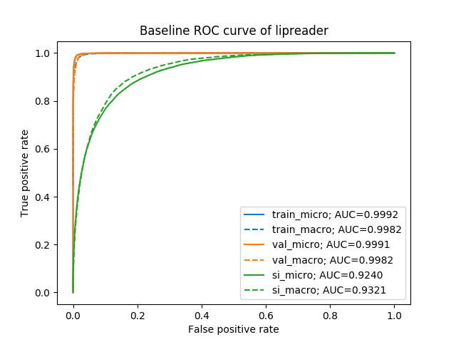
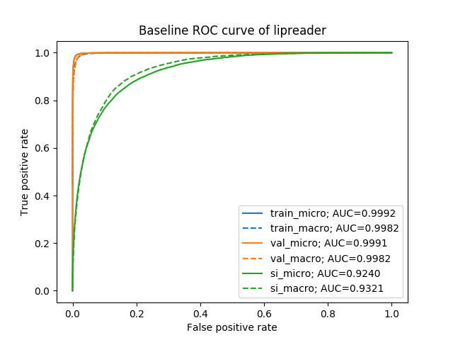
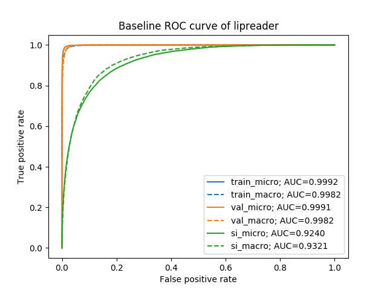
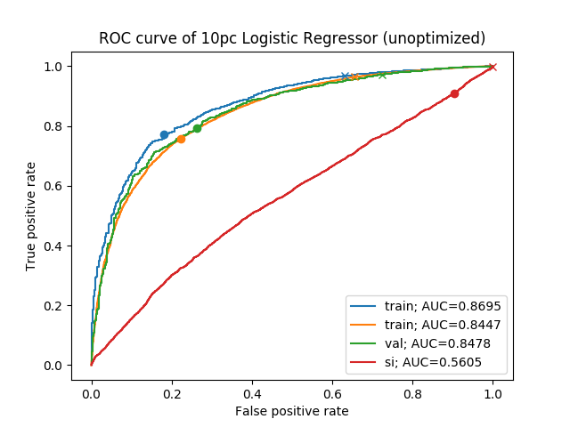
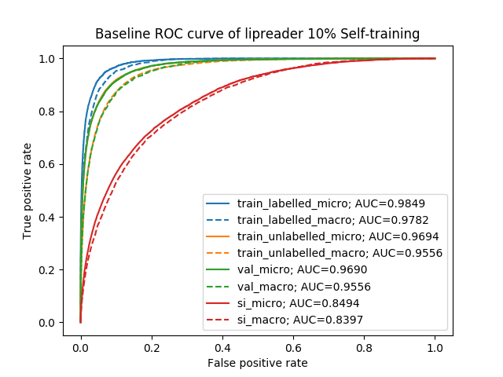

Figure 1: left: comparison of ROC and AUC for 4 different critics on best lipreader predictions: C3DCritic, Linear SVM, RBF SVM, Logistic Regressor; right: ROC of Lipreader, unravelling multi-class as multiple single-class classifications

Figure 2: left: comparison of ROC and AUC for Logistic Regressor critic on predictions of lipreader trained on 10% data; right: ROC of Lipreader, unravelling multi-class as multiple single-class classifications
Use ROC and Operating Point as metrics for comparison
Made and compared assessors from Head Pose + Lipreader features, with Lipreader ROC
FAILURE MODES:
Extracted head poses on GRIDcorpus using dlib
To compare assessors on Lipreader predictions, use:
Using 1-dim Word Durations, 6-dim Head Poses (3 Means, 3 Ranges) , 64-dim Lipreader_Features as Attributes
Calculated ROC for 4 different assessors:
Changed Operating Point from default to that closest to (0, 1) [(fpr, tpr)]
Full comparison:

Figure 3: Comparison of ROC curves of assessors on lipreader predictions on (left) train, (middle) speaker-dependent test, (right) speaker-independent test data